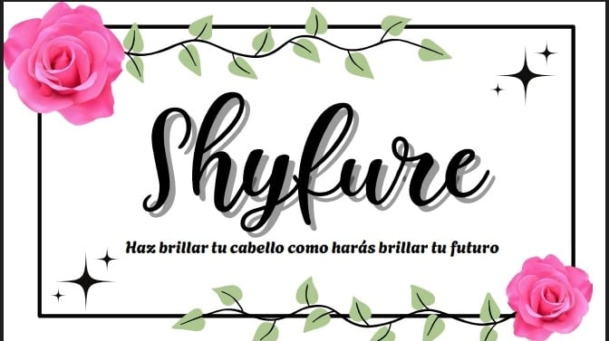

_______________________________________________________________________________________________________________________________________________________________________
¿QUIÉNES SOMOS?
Nosotros somos Shyfure, una marca especializada en el cuidado de tu cabello (de normal a graso) y en el del medio ambiente.
Somos eco-friendlies, es decir, amigables con el medio ambiente y nos preocupamos por nuestra huella ecológica,
así como la vida de nuestros envases posterior a su uso.
¿Cómo se elaboraron?
Nuestros productos están hechos a base de glicerina, agua de rosas, colorantes naturales y
una escencia natural. Nuestros envases son de plástico
y su etiqueta es amigable con el ambiente.
Estos materiales se pueden reciclar sin tener un impacto negativo en el entorno natural.
¿Qué productos manejamos?
Los productos que manejamos son shampoos y acondicionadores.
Los dos con aroma natural a rosas
y con una textura suave para un cuero cabelludo de normal a graso, está dirigido especialmente a las mujeres pero puede usarlo cualquier persona.
.